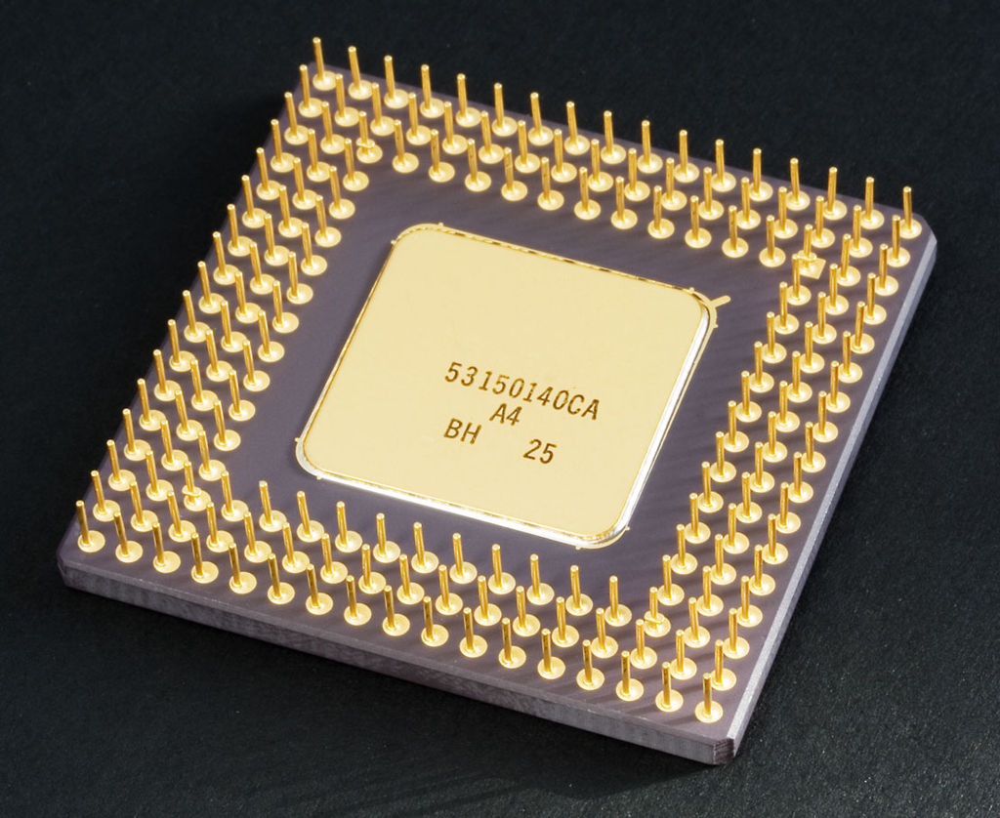

Merkezî işlem birimi (Türkçe kısaltması MİB, İngilizce: Central Process Unit ya da kısaca CPU), dijital bilgisayarların veri işleyen ve yazılım komutlarını gerçekleştiren bölümüdür. Çalıştırılmakta olan yazılımın içinde bulunan komutları işler. Mikroişlemciler ise tek bir yonga içine yerleştirilmiş bir merkezî işlem birimidir. 1970'lerin ortasından itibaren gelişen mikroişlemciler ve bunların kullanımı, günümüzde MİB teriminin genel olarak mikroişlemciler yerine de kullanılması sonucunu doğurmuştur.
